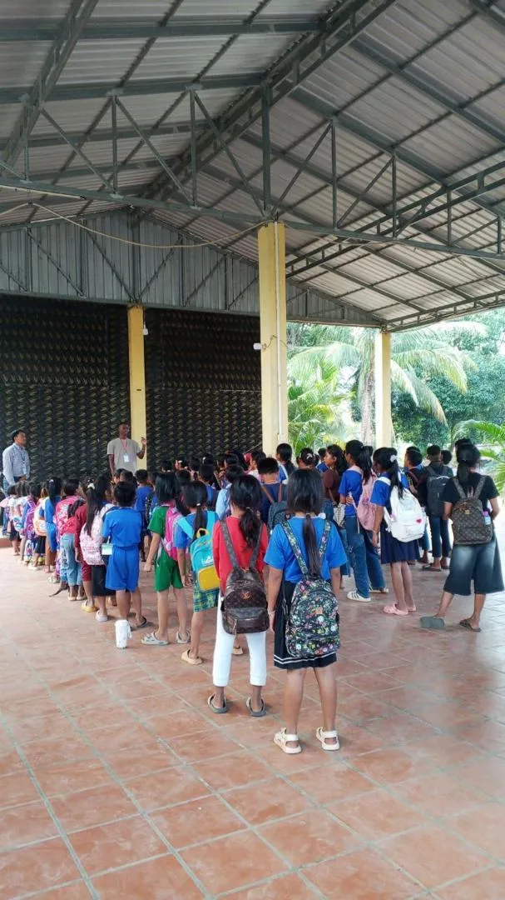

Teaching. Healing.
Planting churches
in Cambodia.
I'm Dr. Michael Ochi, serving with Bless Cambodia Network (BCN) in Cambodia. I came to Cambodia to serve, not just to visit. Through classes, care and the gospel, I'm helping people learn, heal and grow in faith.
Your gift keeps me on the field.
Partner Financially- Serving with Bless Cambodia Network
- Takeo Province, Cambodia
- Under the supervision of Rev. Gihuka Suu
About
I'm Dr. Ochi Onyedikachukwu (goes by the name Michael) a missionary and volunteer from Nigeria serving with Bless Cambodia Network (BCN) in Takeo Province, Cambodia. I studied medicine in China, where I also led prayer and mission work with the Haikou International Christian Fellowship and the International Missions Team (IMT) China.
Today I teach English and Mandarin, teach the Bible, share the gospel, plant churches, and serve communities through health outreach. Language classes open doors, care meets real needs, and the gospel gives lasting hope. I serve under the supervision of Rev. Gihuka Suu, the leader of BCN.
My story
During my medical studies in China, a hard season nearly ended my education. By God's mercy, fellow believers came through for me, and the Lord carried me to graduation.
In early 2025, I joined a two-week mission trip to Takeo Province, Cambodia, doing free health outreach and sharing the gospel in schools and families.
I saw that the harvest is ripe, but the workers are few.
After I graduated in July, God led me from China to Cambodia and this time I returned alone, arriving on August 20, 2025, without knowing exactly how to begin. I prayed, and God led me to start a free English class for the children in our community. Families asked for Chinese too, so I added Mandarin, along with Bible study and Sunday school. The class has grown beyond what I can sustain, and I can no longer afford the learning materials and classroom supplies the students need.
Jesus said, "Freely you have received, freely give" (Matthew 10:8). I'm giving my life to Cambodia, and I'm asking you to stand with me.

What I do
Teaching English and Mandarin
Giving students skills for school, work and the future.Bible teaching
Helping believers grow in faith.Evangelism
Sharing the good news in villages and communities.Church planting
Building new local churches that will last.Health outreach
Caring for the sick and the poor.
Where your gift goes
Every need is itemized. I send a monthly report with photos and receipts so you can see what your gift did.
| Need | Cost |
|---|---|
| Keeping Me on the Field | $3,000 |
| Housing | $1,000 |
| Food and daily needs | $1,500 |
| Health insurance and medical travel | $433 |
| Visa to stay and serve ($800/year) | $67 |
| Our Teaching and Outreach Team | $3,000 |
| Teacher(s) salary | $1,500 |
| Translator salary | $1,500 |
| Getting to Our Communities | $100 |
| Motorbike fuel and maintenance | $100 |
| Total per month | $6,100 |
Keeping Me on the Field allows me to serve full time without a salary, giving my days to the children and adults and communities of Takeo.
| Need | Cost |
|---|---|
| Transport: motorbike for outreach | $3,000 |
| Health outreach kit | $1,520 |
| First aid kit and basic medicines | $1,000 |
| Stethoscopes (kids and adult) | $200 |
| Thermometers (kids and adult) | $100 |
| Blood glucose monitor | $100 |
| Stadiometer and timer | $70 |
| Pulse oximeter | $50 |
| Classroom essentials | $1,000 |
| Computers/tablets (2) | $500 |
| Stationery and learning materials | $300 |
| Student uniforms | $200 |
| Bibles and Bible story booklets | $300 |
| Total | $5,820 |
My promise
- Gifts go to the items above, and I report every month.
- When a need is funded, extra gifts go to the next item.
- Bank and transfer fees (usually 2-5%) come out of gifts.
- Last updated: November 2026
Updates
November 2026
The Class Is Growing
Since I arrived in August 2025, our free English class has grown beyond what I can sustain. Families also asked for Mandarin, so I now teach both, along with Bible study and Sunday school. Please pray for the children and for provision of classroom supplies.
I send a monthly update on what your support is doing. Join my update list by email.
Partner financially
Every gift, large or small, keeps me serving full time in Cambodia. Thank you for standing with me.
Bank transfer (USD, international)
- Account name
- Ochi Onyedikachukwu Ebubechukwu
- Bank
- CANADIA BANK PLC
- Bank address
- No. 315 Corner St. Ang Duong & Monivong Blvd. Phnom Penh, Cambodia
- Account number
- 0640000198306
- SWIFT/BIC code
- CADIKHPP
- Currency
- USD
- Reference
- Mission Aid - [your name]
Please note
Bank charges vary by country. For a large gift, please email me first at ochionyedikachukwu@gmail.com so I can confirm these details with you.
Giving from Nigeria or China? Email me for local giving options.
After you give
Email me at ochionyedikachukwu@gmail.com with your name and the date of your gift, so I can thank you personally and add you to my update list. Please trust only giving details that appear on this page or come from that email.
Disclaimer
Gifts are personal support for my missionary service with Bless Cambodia Network (BCN). They are sent to my personal bank account, are not received, managed or receipted by BCN, and may not be tax-deductible. Please consult your local tax adviser. For details, see our Full Disclaimer.
Commendation
"Dr. Michael Ochi serves with BCN in Cambodia in teaching, evangelism, church planting and health outreach. We gladly commend him for your support."
Rev. Gihuka Suu, Leader, Bless Cambodia Network
Cambodiatyrannus@gmail.com
Contact
Email: ochionyedikachukwu@gmail.com
WhatsApp and WeChat: +86 150 0808 3706
Privacy: Your information is never shared or sold.